我真是发神经，怎么突然就刷到了魂2的mod视频（旧神之薪），它做得相当的不错，很符合我的审美。在看到被mod优化后的魂2主角套装（法汉），加上长戟时，我被深深地吸引。我迫不及待想玩这个mod，但是很可惜，还没有上线，目前进有实机演示视频。我转而想到了魂3，我有这个游戏，最近我还给它购买了新的DLC，魂3也有战戟，也有法汉一套。最后，我果然是再次开始了黑暗之魂3的传火之旅，yes，indeed！
战戟法汉的传火之旅在今天傍晚为止都算是比较顺利，直到再次遇到老对手——教宗沙立万。真是一生之敌，这个可以弹反的boss，我想学会弹反这个臭boss。沙立万的弹反对于我来说还是比较难，一方面，是错学习成本很高，它对我连击2下，我的角色就会死亡。而且它连击频率异常高！导致大部分时候我都是在跑过去找他的路上，每次进门就会被快速砍死。
我觉得这样的学习方式太愚蠢了，必然会浪费大量的无用时间。我想，有没有mod可以做到角色无敌，让我可以和boss一直对练。我尝试去找了，找的过程中发现这种mod不多！真是让人震惊！而且mod的安装有安全问题和学习成本，最后我放弃这个道路。接着，我去看别人的针对沙立万的弹反教程，【黑暗之魂3】沙力万全招式弹反分解。对于这个视频我的感受是：它的有效信息确实多，但感觉不像个教程！
我想起以前攻略一些招式比较多、比较复杂的boss，我也回去找视频学习如何攻略。一些将boss招式逐个分析的教程会出现在我们的搜索结果中。这些方法不是说不对，但是感觉缺少最关键的东西。它们都只看到boss当前这一招，不能看到未来几招。只能看到一招的话，如果你想战胜敌人，那么就要求你有超强的反应能力，在无防备的情况下即时应对当前boss出招。
所谓可以看到未来几招的意思是，看到boss当前的出招，可以预判这招之后，下一招是什么。让你在应对当前时就已经做好下一招的准备，这样才能做到游刃有余！这样才是正常人的攻略手段！
如果仅学会了每一招的应对方式，而不懂预判下一招。这样子留给自己的余裕太少，过于被动，很容易陷入手忙脚乱的境地！
准确预判下一招很难，应该主动引导，让它的出招符合预期，让下一招的可选范围缩到最小。换句话说就是，让boss陷入我们的节奏！
出招特点
所有左手魔剑（蓝色）出招中，仅有一招是可以被弹反的；
所有右手火焰剑出招中，仅有一招是无法被弹反的。
出招详情
| 序号 | 招式 | 起手式 | 可弹反 | 起手式 | 说明 |
|---|---|---|---|---|---|
| 00 | 右移斩 | - | ✔️ | ✔️ | |
| 01 | 左移刺 | - | ❌ | ✔️ | |
| 02 | 突进斩 | - | ✔️ | ✔️ | |
| 03 | 右踏斩 | - | ✔️ | ✔️ | |
| 04 | 右踏反斩 | - | ✔️ | ✔️ | |
| 05 | 右踏斩·连 | 左剑突刺，举盾应对 | ✔️ | ❌ | |
| 06 | 左剑蓄力突刺 | - | ❌ | ✔️ | |
| 07 | 左剑突刺-连 | - | ❌ | ❌ | |
| 08 | 左剑突刺连·无蕾力动作 | - | ❌ | ❌ | |
| 09 | 左剑回旋斩 | - | ❌ | ✔️ | |
| 10 | 右退斩 | 左剑突刺，举盾应对 | ✔️，在第三招弹反 | ✔️ | |
| 11 | 左剑伪突刺 | - | ❌ | ✔️ | |
| 12 | 右剑蓄力下劈 | - | ✔️ | ✔️ | |
| 13 | 回旋二连击 | - | ✔️ | ✔️ | |
| 14 | 回身斩 | 左剑突刺 | ✔️ | ✔️ | |
| 15 | 左剑回身斩 | 左剑突刺 | ✔️ | ✔️ | |
| 16 | 蓄力后跳下斩 | - | ✔️ | ✔️ | 出现频率很低 |
| 17 | 跳斩 | - | ✔️ | ✔️ | |
| 18 | 空跳下戳 | - | ❌ | ✔️ | |
| 19 | 空跳右剑下戳 | - | ❌ | ✔️ | |
| 20 | 腾空跳劈 | - | ✔️ | ✔️ | |
| 21 | 混合四连击 | - | ✔️ | ✔️ | |
| 22 | 上挑回旋斩 | - | ✔️ | ✔️ | |
| 23 | 变身 | - | ❌ | ❌ | |
| 24 | 左剑蓄力突刺·起 | - | ❌ | ✔️ | |
| 25 | 蓄力气剑 | - | ❌ | ✔️ | |
| 26 | 分身 | - | ❌ | ❌ |
以“左剑突刺”为起手式的招数
| 序号 | 招式 | 应对突刺 | 总招数 | 弹反招数 |
|---|---|---|---|---|
| 05 | 右踏斩·连 | 举盾 | 2 | 2 |
| 10 | 右退斩 | 举盾 | 3 | 3 |
| 14 | 回身斩 | 向前翻滚 | 3 | 3 |
| 15 | 左剑回身斩 | 向前翻滚 | 2 或 3 | 最后一招（2 或 3） |
派生出招
右移斩
快速右移（向boss右手方向）一段距离；
右手右剑，从右上至左下正手斜劈。
招数共：1招
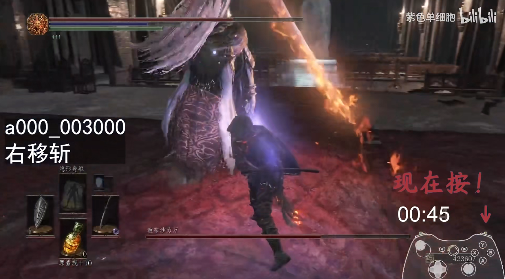
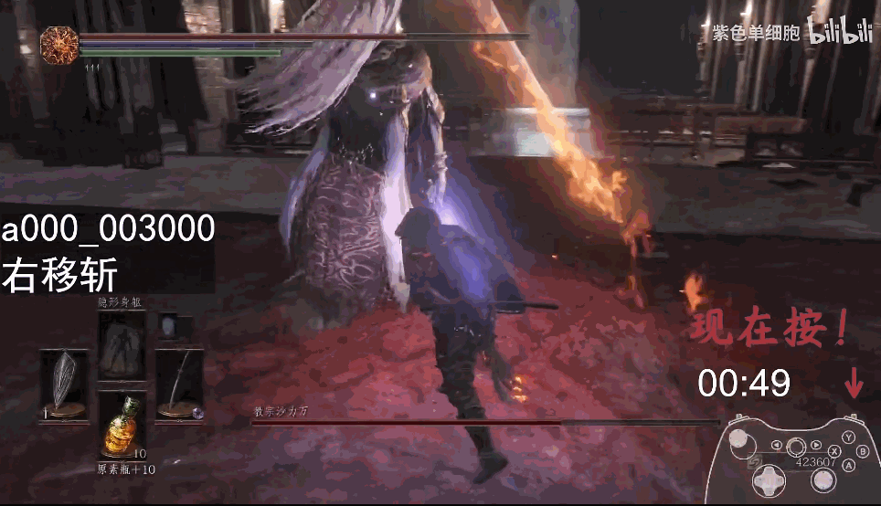
突进斩
招数共：1招
向前（玩家方向）突进一大段距离近身；
右手右剑，从右上至左下正手斜劈。
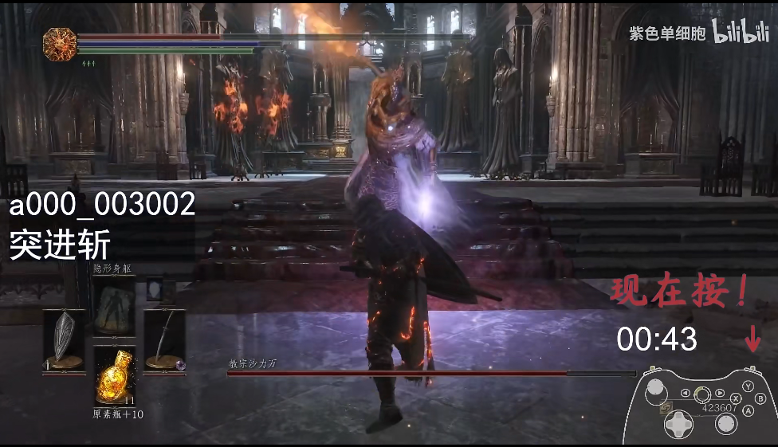
注意：弹反时机是最初剑高过9点方向时，而不是抬至最高点
右踏斩
招数共：1招
与 突进斩 类似，但是没有大段突进。弹反时机不同！
- 右手右剑，从右上至左下正手斜劈。注意，boss的右剑是夸张的右举，已达到后背，见下图。
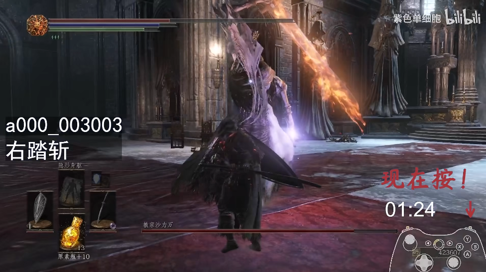
提醒：弹反时机与右移斩差不多！算是不横移的“右移斩”
右踏反斩
招数共：2招，包含第1招起手，可能是右移斩或右踏斩；第2招结尾，右踏反斩
派生1
- 起手：右踏斩【#03】（右上至左下）；
- 右手右剑，从左上至右下，反手斩下
派生2
- 起手：右移斩【#00】；
- 右手右剑反手，从左上王右下，反手斩下【#04】
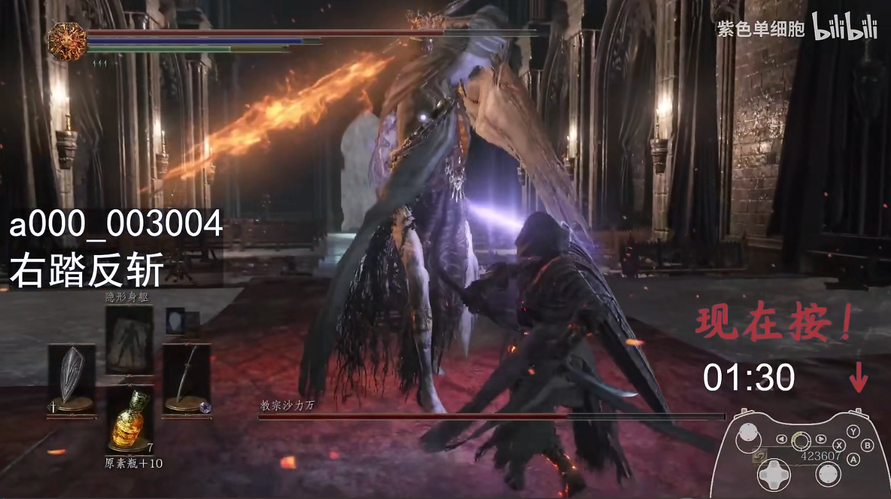
注意：从视频中弹反的时机观察到的特点：右手从胸前往左后方抬，抬起至最高点出手
剑身差不多到达八点钟方向
右踏斩-连
右踏斩不作为起手式，而是作为后续招式。
- 起手，左剑突刺。*应对：举盾格挡，观察下一个出招
- 接 右踏斩。
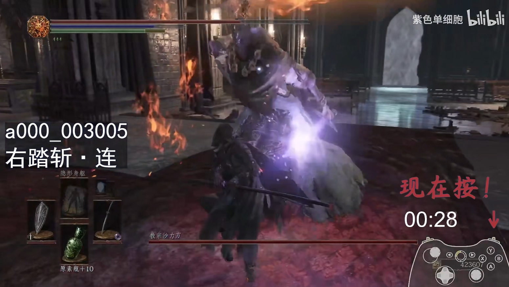
注意：“右踏斩-连”的弹反时机与右踏斩的时机区别较大，前者只要右手反手到2点钟，后者要到4.5点钟
右退斩
起手：左剑突刺（举盾挡）-> 右旋双手下劈（举盾挡） -> 右手单剑下劈【#10-右退斩】（弹反）

右剑蓄力下劈
起手：右剑右正手蓄力下劈【#12】
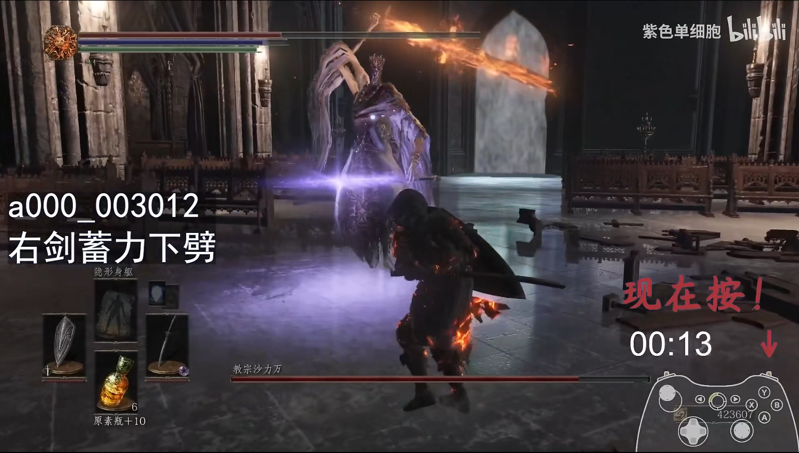
回身斩
起手：左剑突刺（前翻滚，boss冲到后面，自己跟上）- 右手单剑下劈（玩家还在boss身后）- 右手回身斩【#14】（弹反）
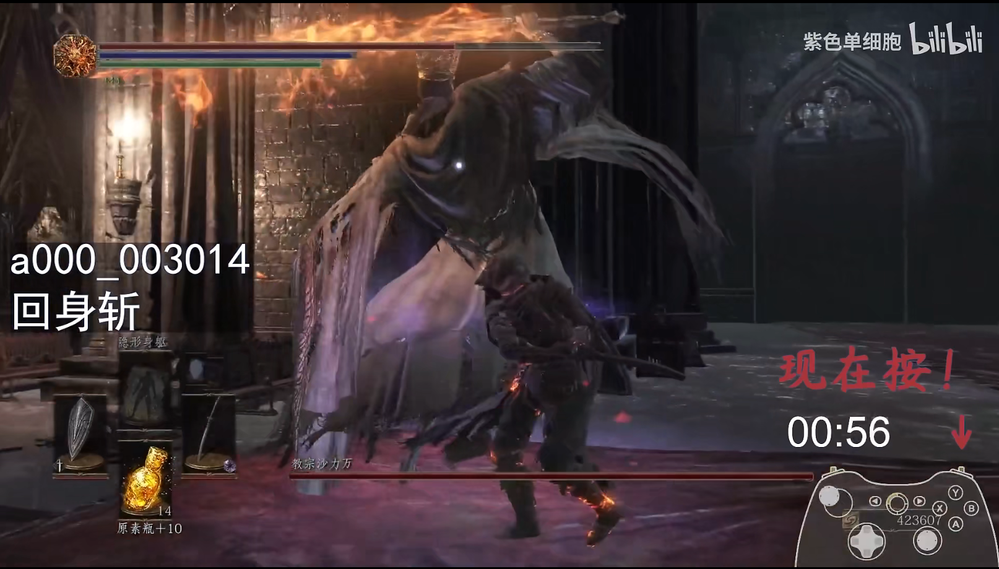
左剑回身斩
派生1
- 起手，左剑突刺。应对：前翻滚，转身追boss；
- 左剑回身斩【#15】。应对：弹反
派生2
- 起手，左剑突刺。应对：前翻滚，转身追boss；
- 右手单剑下劈。无应对，在攻击范围外，继续靠近boss
- 左剑回身斩【#15】。应对：弹反
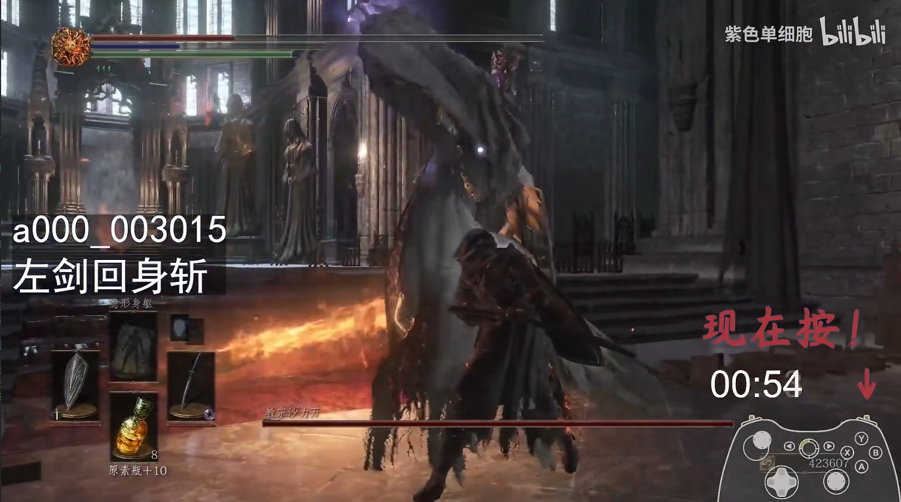
跳劈
派生1
- 远距离发射光线；
- 起跳突进右手下劈
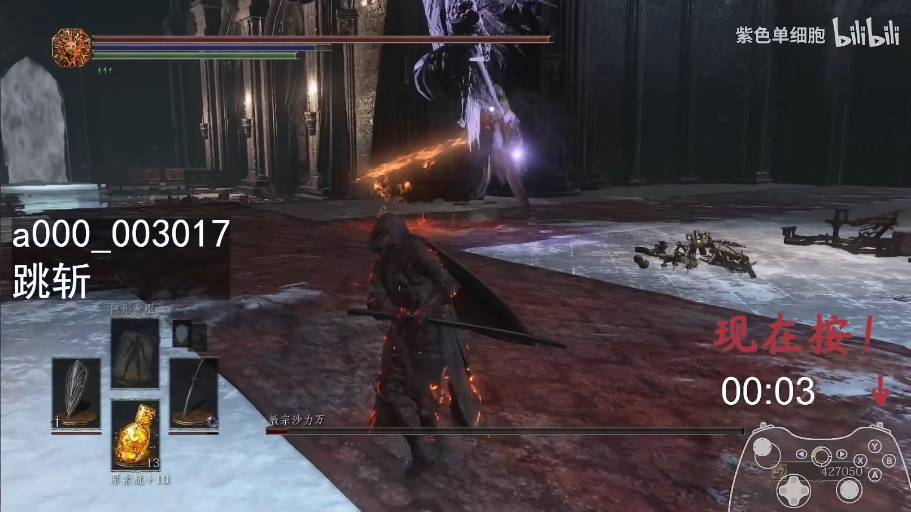
注意：这里弹反的目标是幻影。
腾空跳劈
- 起手：几乎竖直升起，然后下劈【#20】
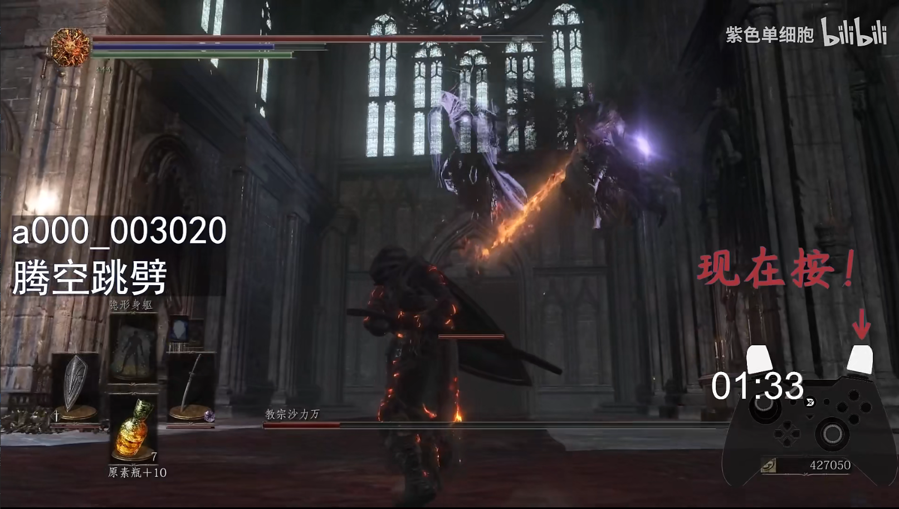
注意：弹反的目标是幻影
混合四连击
派生1
起手第一击就可以弹反，不需要等后续出招到某一次斩击！
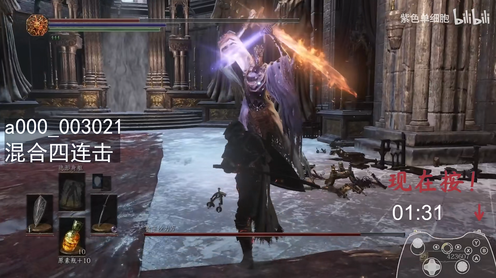
注意：boss双手此时不是最高点，而是最高点之后稍微下降
派生2
举盾扛过第一二次斩击，瞄准第三次攻击进行弹反！
- 起手，右剑右下横砍；
- 左剑左下横砍；
- 右手回身右剑反手下劈。瞄准，等待弹反！
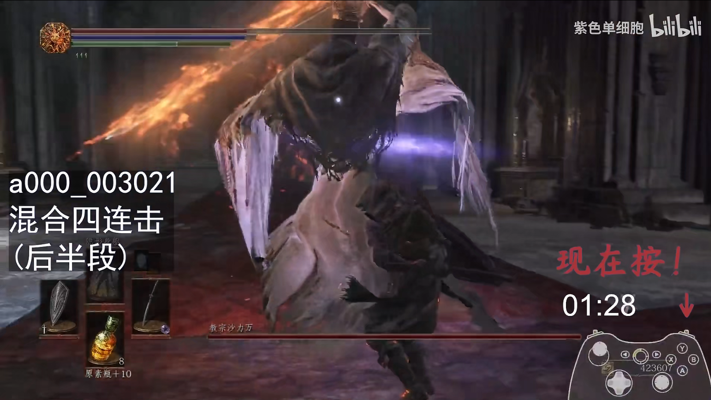
上挑回旋
这一招包含2次斩击，分别是上挑和下劈，两个都是可以弹反。这一招是接在混合四连击后面。
派生1
- 起手，混合四连击。最后一击是左手蓝剑直刺；
- 右手火焰剑，从右下往左上，上挑。
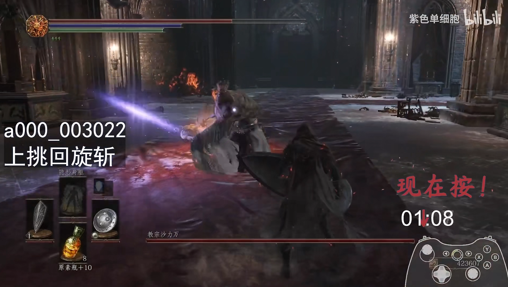
派生2
- 基于派生1；
- 双手下劈；
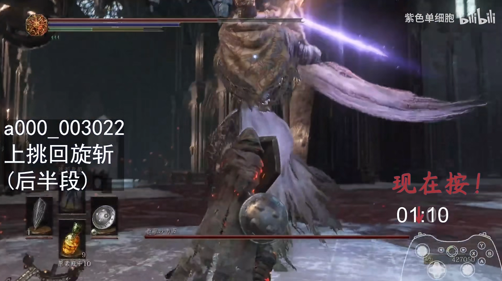
起手式
左剑突刺
- 右踏斩-连：